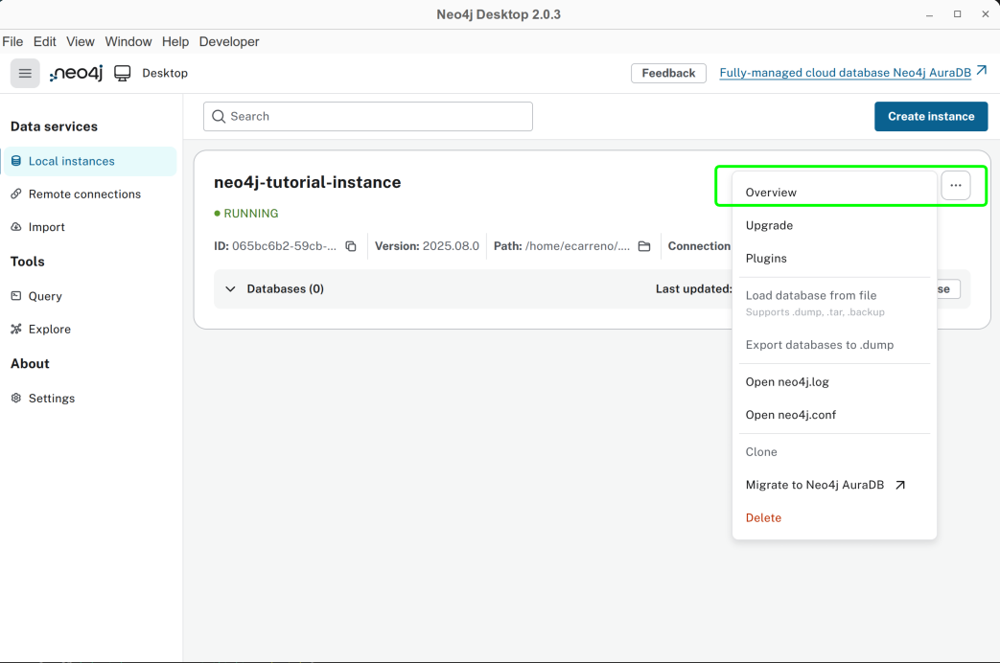
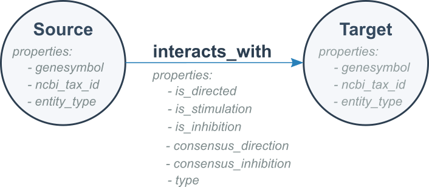
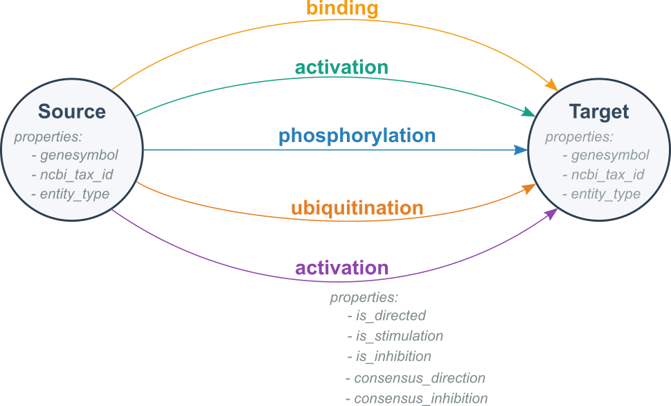
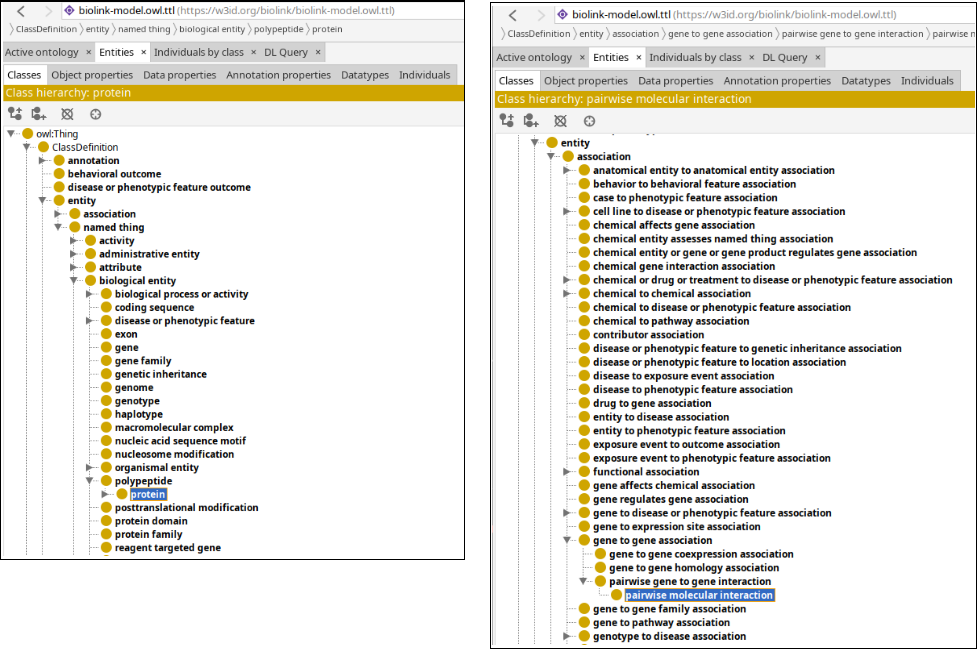
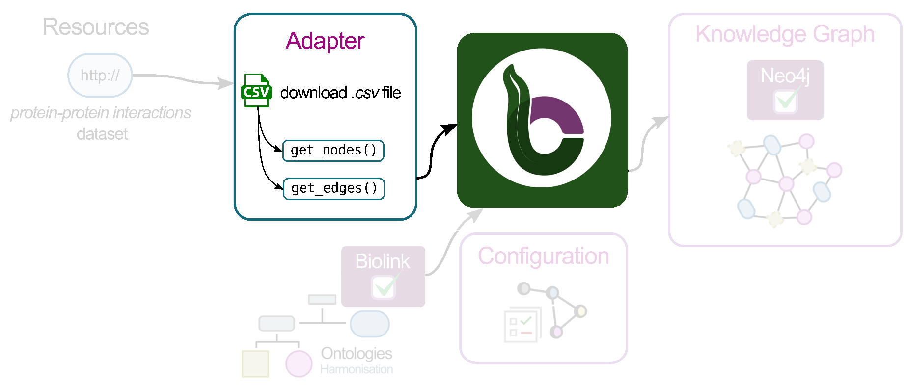
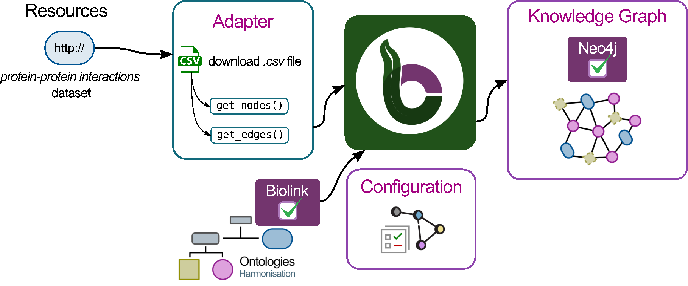
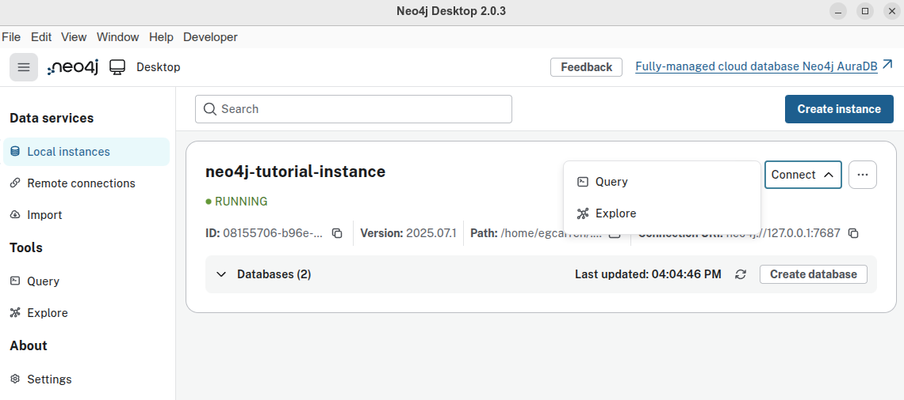
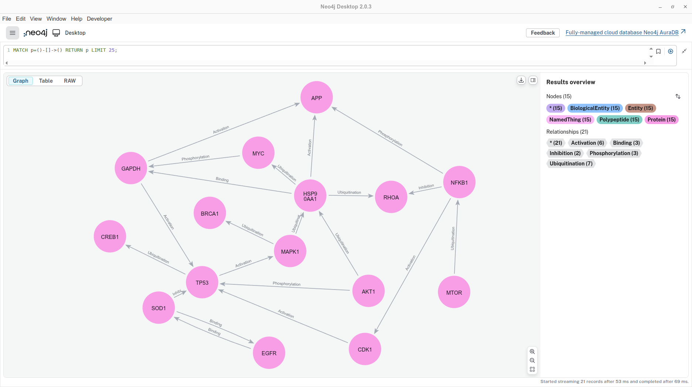
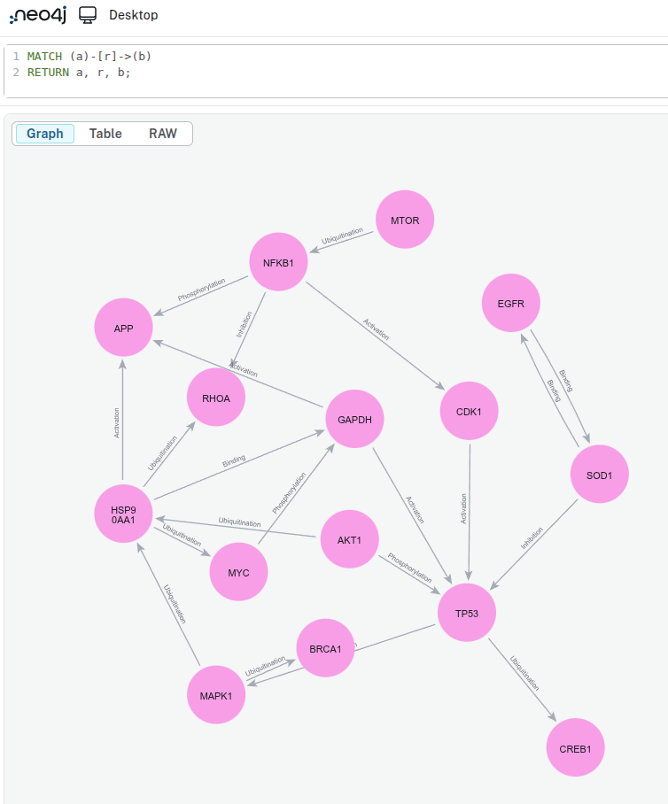
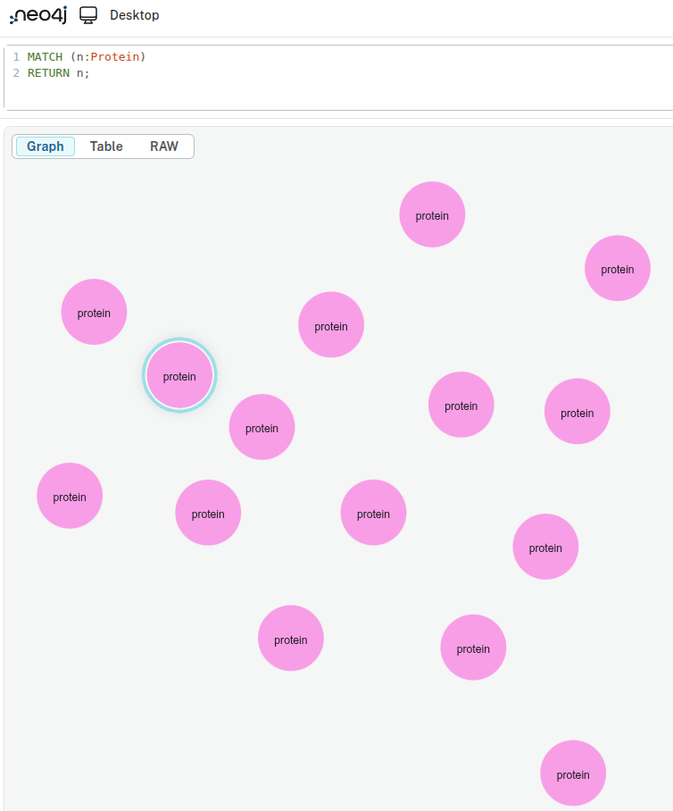

🧑💻 Agent-supported hands-on Building Graphs with BioCypher (offline mode) and Neo4j
Overview
This tutorial will help you get started with BioCypher in offline mode. You will learn how to use the BioCypher MCP and instruct an agent to create a simple knowledge graph with a synthetic dataset that contains information about proteins and its interactions.
By the end of this tutorial, you will be able to:
- Set up the BioCypher MCP.
- Explore a synthetic dataset and learn how to instruct an agent in BioCypher to process it and build a graph structure.
- Build a small knowledge graph from the data.
- View and query the graph using Neo4j.
Pre-requisites
Note: Ensure you have the following prerequisites before continue with the tutorial.
| Tool | Version/Requirement | Installation Link | Notes |
|---|---|---|---|
| VSCode or other IDE | Any | VSCode IDE | For interacting with the AI agent |
| Git | Any | Git Docs | For version control |
| Neo4j | >=1.6 | Neo4j Desktop | For querying graphs |
| uv | >=0.7.x | uv Docs | For dependency management |
| Python | >= 3.11 | Python.org | Required for BioCypher |
| Jupyter (optional) | Any | Jupter | Required for exploring the sample data |
Setup
Setup AI agent and the BioCypher MCP
As a first step, you need to install VSCode or another IDE of your choice that allows the use of an MCP. You then need to connect your IDE to a model provider like GitHub Copilot, OpenAI, Claude, or by using a local model. For example, if you are using VSCode, you can install the extension for GitHub Copilot, and add the BioCypher MCP to the IDE.
To make sure that the agent and MCP are configured correctly, you can ask in the chat
You
you> Show biocypher-mcp tools
and the agent should respond with a list of available tools, such as
Agent
copilot> Here are the available BioCypher MCP tools:
-
Project Creation
- check_project_exists
- get_cookiecutter_instructions
-
Adapter Creation (5-phase workflow) ...
Setting up the working environment and starter repository using an AI agent
In this section, you will set up your working environment and folder structure for the BioCypher adapter.
Steps:
-
Instruct the AI agent to use the
get_cookiecutter_instructionstool:You
you> /get_cookiecutter_instructions
This will result in a response from the agent containing instructions on how to set up the project using cookiecutter:
Agent
copilot> [tool-start] biocypher-mcp-get_cookiecutter_instructions (mcp_server=biocypher-mcp, mcp_tool=get_cookiecutter_instructions)
[tool.execution_complete] (unknown) Here’s how to create a BioCypher project using cookiecutter:
- Install cookiecutter (if not already installed):
...
Would you like to proceed? If so, please provide your desired project name and a short description.
You will then need to provide a project name and project description as instructed.
You
you> Project name: tutorial-basics; project description: Hands-on basic graph creation with BioCypher using a small synthetic dataset.
Agent
copilot> ...
[tool.execution_complete] (unknown) The BioCypher project "tutorial-basics" was created successfully using the cookiecutter template. Next steps:
- cd tutorial-basics
- pip install -e . (or uv sync)
- Configure your data source in create_knowledge_graph.py
- Update config/schema_config.yaml if needed
- Run: python create_knowledge_graph.py
Let me know if you want to proceed with setup, dependency installation, or further customization!
-
Check the current project structure. Below, we list the most important folders and files for this tutorial.
-
Install the dependencies using your preferred package manager (e.g. uv or pip):
You should always first create a dedicated Python environment for your project, and then install the dependencies into the environment. Environments can be managed by conda, uv ,poetry or venv, for example.
After you have created your environment, activate the environment, for example, in the terminal
Now you are ready to install the required packages using your preferred package manager as described in the agent chat response. Go to the terminal and type to change into thetutorial-basicsdirectory. Then install the project dependencies either using pip: or using uv:You also need to install Jupyter into your environment, i.e.
pip install jupyter, if later you want to explore the sample data in a Jupyter notebook.
Setup Neo4j
Note: In this section, we will create a Neo4j instance to use later in the tutorial. It is important to set this up now. For more information about Neo4j, please take a look at our Explanations.
-
Execute Neo4j Desktop, if this the first time you should see a window like this one.

Figure 1. Neo4j Desktop start screen. -
Create a new instance in Neo4j. For this tutorial, name it
neo4j-tutorial-instanceand choose a password you can remember.
Figure 2. Create Instance window. This may vary depending on your Neo4j version. -
Access details in the option Overview.

Figure 3. Overview option to check details related to your Neo4j instance. -
Save the path to your Neo4j instance, we are going to use this path later in this tutorial.

Figure 4. Neo4j instance with its path location highlighted.
Section 1. Exploratory Data Analysis
For this tutorial we are going to use a synthetic dataset that contains information about the interaction between proteins. The dataset is contained in a tsv file, similar to a csv file but using tabs instead of commas as delimiters.
-
First, download the dataset:
-
Create a folder called
notebooksundertutorial-basics -
Create and run either a Python file or a Jupyter notebook containing the following code.
File:
notebooks/eda_synthetic_data.pyimport pandas as pd # Load the dataset df = pd.read_table('../data/synthetic_protein_interactions.tsv', sep='\t') # Show the first few rows print("\n---- First 10 rows in the dataset") print(df.head(10)) # List the columns in the dataset print("\n---- Columns in the dataset") for column in df.columns: print(f"\t{column}") # Get basic info about the datasets print("\n---- Summary Dataframe") print(df.info()) # Check for missing values print("\n---- Check missing values") print(df.isnull().sum()) # Show summary statistics for numeric columns print("\n---- Describe Dataframe statistics") print(df.describe()) # Count the unique number of proteins in each column print("\n---- Number of unique proteins per column.") print('Unique proteins in column protein_a:', df['source'].nunique()) print('Unique proteins in column protein_b:', df['target'].nunique())
📝 Exercise:
a. How many unique proteins do we have in the dataset? Hint: count unique proteins in the source and target columns.
b. How many interactions exist in our dataset? Hint: count unique interactions between sources and targets.
c. Some columns contain boolean values represented as "1" and "0". Can you detect which ones?
Answer:
a. Number of unique proteins: 15.
b. Number of unique interactions: there are 22 unique interactions. One interaction is repeated, with a difference in one of its properties.
c. is_directed, is_stimulation, is_inhibition, consensus_direction, consensus_stimulation,consensus_inhibition.
Section 2. Graph Modeling
Graph Modeling
By looking at the tsv file, we can see that there are two columns called source and target, which represent proteins. This means that each row represents an interaction between a source protein and a target protein. For now, our graph could look like this.

Can we improve the graph? Absolutely! Understanding the data is essential for building an effective graph. By examining the other columns in the table, we can identify additional details:
-
The
sourceandtargetcolumns represent nodes in the graph, with each node corresponding to a protein. -
Each protein listed in the
sourcecolumn has associated properties found in other columns:source_genesymbol: the gene symbol of the source protein.ncbi_tax_id_source: the NCBI taxonomy identifier of the source protein.entity_type_source: the type of entity for the source protein.
-
Each protein in the
targetcolumn has associated properties found in other columns:target_genesymbolncbi_tax_id_targetentity_type_target

We know that a source protein interacts with a target protein, but do we know how?
Remaining columns in the table describe properties of these protein-protein interactions:
Interaction properties
is_directedis_stimulationis_inhibitionconsensus directionconsensus stimulationconsensus inhibitiontype
It is these protein-protein interactions that form the edges in the graph. Here, is_directed, is_stimulation, and is_inhibition describe properties that characterize each interaction type, while consensus direction, consensus stimulation, and consensus inhibition indicate the aggregated or consensus value derived from multiple sources in OmniPath for each property.
We are ready to model our second version of our graph. It is like follows:

Finally, we can model a more detailed graph using our dataset. Rather than representing all interactions in a generic way, we can use the type field to show the specific type of interaction occurring between each pair of proteins.

Exercise 1. Example of a graph we expect with our data
📝 Exercise: Sketch a portion of the knowledge graph using the provided dataset.
Answer:
If you include all the nodes and edges from your TSV file, your sketch should look like the following example:
graph LR
SOD1((SOD1)) -- binding --> EGFR((EGFR))
CDK1((CDK1)) -- activation --> TP53((TP53))
MYC((MYC)) -- phosporylation --> GAPDH((GAPDH))
MTOR((MTOR)) -- ubiquitination --> NFKB1((NFKB1))
NFKB1((NFKB1)) -- activation --> CDK1((CDK1))
MAPK1((MAPK1)) -- ubiquitination --> HSP90((HSP90))
TP53((TP53)) -- ubiquitination --> CREB1((CREB1))
HSP90((HSP90)) -- activation --> APP((APP))
HSP90((HSP90)) -- ubiquitination --> RHOA((RHOA))
SOD1((SOD1)) -- inhibition --> TP53((TP53))
AKT1((AKT1)) -- ubiquitination --> HSP90((HSP90))
HSP90((HSP90)) -- ubiquitination --> MYC((MYC))
MAPK1((MAPK1)) -- ubiquitination --> BRCA1((BRCA1))
NFKB1((NFKB1)) -- inhibition --> RHOA((RHOA))
NFKB1((NFKB1)) -- phosphorylation --> APP((APP))
HSP90((HSP90)) -- binding --> GAPDH((GAPDH))
GAPDH((GAPDH)) -- activation --> TP53((TP53))
AKT1((AKT1)) -- phosphorylation --> TP53((TP53))
GAPDH((GAPDH)) -- activation --> APP((APP))
TP53((TP53)) -- activation --> MAPK1((MAPK1))
TP53((TP53)) -- ubiquitination --> CREB1((CREB1))
MYC((MYC)) -- phosphorylation --> GAPDH((GAPDH))
EGFR((EGFR)) -- binding --> SOD1((SOD1))Section 3. Graph creation with BioCypher
We aim to create a knowledge graph using the data we found in the tsv file. Let's recap our exercise:
-
Create a graph with the following characteristics:
- One node type:
Protein. - Five edge types:
activation,binding,inhibition,phosphorylation,ubiquitination.
- One node type:
-
Each node has properties:
- genesymbol
- ncbi_tax_id
- entity_type
-
Each edge has properties:
- is_directed
- is_stimulation
- is_inhibition
- consensus_direction
- consensus_stimulation
- consensus_inhibition
-
We must export the knowledge graph to Neo4j.
To achieve this, we can divide the process into five sections using the BioCypher MCP:
- Use
get_adapter_creation_workflowfor an overview. - Use
get_phase_guidancefor step-by-step help in each phase. - Use
get_implementation_patternsfor code examples. - Use
get_schema_configuration_guidancefor schema setup. - Use
get_resource_management_guidancefor data handling.
Step 1. get_adapter_creation_workflow for an overview and understanding of the process

You
you> /get_adapter_creation_workflow
Agent
copilot> The BioCypher adapter creation workflow has 5 phases: 1. Data Analysis and Understanding: Analyze your input data’s structure and schema needs. 2. Implementation Strategy Design: Choose the adapter architecture and extraction strategy. 3. Implementation: Write the adapter code and map fields. 4. Quality Assurance: Test and validate your adapter. 5. Documentation and Maintenance: Document usage and plan for future updates.
Create a schema for your graph
Rationale: the schema file allows us to define the skeleton for our knowledge graph. Nodes, edges, properties are defined here.
First we need to understand the specific requirements of the data that we would like to represent as graph. In the previous section, we have already learned what our data looks like at the moment and how it will be represented after processing with BioCypher. Now we can interact with the AI agent to understand the aspects about the data that are important for BioCypher.
You
you> Start with phase 1: Data Analysis and Understanding: Analyze your input data’s structure and schema needs.
Agent
copilot> Phase 1: Data Analysis and Understanding involves:
- Resource Structure Analysis: Identify your data source type (file, API, database, etc.) and analyze its structure.
- Metadata Pattern Recognition: Extract metadata fields, identify shared/unique patterns, and map relationships.
- Schema Assessment: Check if an existing schema covers all concepts or create/extend one as needed.
Expected outputs: data source type, structure analysis report, and schema requirements assessment.
Please provide a sample or description of your input data so I can guide you through the analysis.
We now need to tell the agent where to find the data:
You
you> The data lives in the data folder in file synthetic_protein_interactions.tsv.
The agent will give you information on the file, please check that this is what you expected. You can ask for a summary for a more in-depth comparison. You should then ask the agent for a detailed schema proposal:
You
you> detailed schema proposal
Agent
copilot> Here’s a detailed schema proposal for your protein interaction data:
Node: Protein
- id: UniProt accession (source/target)
- gene_symbol: source_genesymbol / target_genesymbol
- ncbi_tax_id: ncbi_tax_id_source / ncbi_tax_id_target
- entity_type: entity_type_source / entity_type_target
Edge: ProteinInteraction
- source: Protein.id
- target: Protein.id
- type: interaction type (e.g., binding, activation)
- is_directed: boolean
- is_stimulation: boolean
- is_inhibition: boolean
- consensus_direction, consensus_stimulation, consensus_inhibition: booleans
Let me know if you want this as a YAML/JSON schema or further customized!
You can ask the agent to create a yaml schema for you. In the end it should look like this.
he protein top-level key in the YAML snippet identifies our entity and connects it to the ontological backbone.
| Key | Value | Description |
|---|---|---|
represented_as |
node |
Specifies how BioCypher should represent each entity in the graph; in this case, as a node. |
preferred_id |
uniprot |
Defines a namespace for our proteins. In this example, all proteins follow the UniProt convention—a 5-character alphanumeric string (e.g., P00533). |
input_label |
uniprot_protein |
Indicates the expected label in the node tuple. All other input nodes without this label are ignored unless they are defined in the schema configuration. |
For more information about which other keywords you can use to configure your nodes in the schema file consult Fields reference.
Edges (relationships)
As shown in Figure 7, each edge has the same set of properties (is_directed, consensus_direction, etc.). At this stage, we have two options for defining the edges:
- Option 1: Create each edge and explicitly define the same set of property fields for every edge.
- Option 2 (recommended): Create a base edge with the properties, and then create edges that inherit the behavior of this base edge. This approach reduces lines of code and avoids repetition. For example, if you have more than 20 edges, Option 1 would likely not be practical.
Base Edge
The protein protein interaction top-level key in the YAML snippet identifies our edge entity.
| Key | Value | Description |
|---|---|---|
is_a |
pairwise molecular interaction |
Defines the type of entity based on the ontology. |
represented_as |
edge |
Explicitly specifies that this entity is an edge. |
input_label |
protein_protein_interaction |
Defines a namespace for our relationships. |
properties |
property: datatype (i.e. is_directed: bool) |
Contains all properties associated with this edge; each property has a name and an associated datatype. |
Inherited Edges
The activation: top-level key in the YAML snippet identifies our edge entity.
| Key | Value | Description |
|---|---|---|
is_a |
protein protein interaction |
Defines the type of entity; in this case, it is a child of the base edge we defined previously. |
inherit_properties |
true |
Indicates whether all properties defined in the base edge should be inherited. |
represented_as |
edge |
Specifies that BioCypher will treat this entity (activation) as an edge. |
input_label |
binding |
Specifies the expected edge label; edges without this label are ignored unless defined in the schema. |
A comment about the connection between BioCypher and Ontologies
In BioCypher, ontologies are integrated through the schema configuration file. This YAML file defines the structure of the graph by specifying which entities and relationships should be included. At the same time, it links those entities to the biomedical domain by aligning them with an ontological hierarchy. In this tutorial, we use the Biolink Model as the backbone of that hierarchy. The guiding principle is simple: only entities that are defined in the schema configuration and present in the input data are incorporated into the final knowledge graph.
Figure 10 illustrates the Biolink Model and some of its components organized in a hierarchy. Notice that entities such as protein (nodes) and pairwise molecular interaction (edges) appear both in the schema configuration and in the ontology. This alignment ensures that BioCypher graphs are not only structured consistently but also grounded in standardized biomedical concepts. For a deeper exploration of ontologies in BioCypher, see our ontology tutorial.

📝 Exercise: Revise and complete the
schema_config.yamlfile, and make sure it is located in theconfigfolder.
Answer:
See the example below for a completed schema_config.yaml.
File: config/schema_config.yaml
#-------------------------------------------------------------------
#------------------------- NODES -------------------------
#-------------------------------------------------------------------
#==== PARENT NODES
protein:
represented_as: node
preferred_id: uniprot
input_label: uniprot_protein
#-------------------------------------------------------------------
#------------------ RELATIONSHIPS (EDGES) -----------------
#-------------------------------------------------------------------
#==== PARENT EDGES
protein protein interaction:
is_a: pairwise molecular interaction
represented_as: edge
input_label: protein_protein_interaction
properties:
is_directed: bool
is_stimulation: bool
is_inhibition: bool
consensus_direction: bool
consensus_stimulation: bool
consensus_inhibition: bool
#==== INHERITED EDGES
activation:
is_a: protein protein interaction
inherit_properties: true
represented_as: edge
input_label: activation
binding:
is_a: protein protein interaction
inherit_properties: true
represented_as: edge
input_label: binding
inhibition:
is_a: protein protein interaction
inherit_properties: true
represented_as: edge
input_label: inhibition
phosphorylation:
is_a: protein protein interaction
inherit_properties: true
represented_as: edge
input_label: phosphorylation
ubiquitination:
is_a: protein protein interaction
inherit_properties: true
represented_as: edge
input_label: ubiquitination
Configure BioCypher behavior
Rationale: The purpose of writing a biocypher_config.yaml is to define how BioCypher should operate for your project—specifying settings for data import, graph creation, and database interaction—all in one place for clarity and easy customization.
File: config/biocypher_config.yaml
#---------------------------------------------------------------
#-------- BIOCYPHER GENERAL CONFIGURATION --------
#---------------------------------------------------------------
biocypher:
offline: true
debug: false
schema_config_path: config/schema_config.yaml
cache_directory: .cache
#----------------------------------------------------
#-------- OUTPUT CONFIGURATION --------
#----------------------------------------------------
neo4j:
database_name: neo4j
delimiter: '\t'
array_delimiter: '|'
skip_duplicate_nodes: true
skip_bad_relationships: true
import_call_bin_prefix: <path to your Neo4j instance from Setup Neo4j section>/bin/
The first block is the BioCypher Core Settings, which starts with biocypher:
| key | value | description |
|---|---|---|
offline |
true |
Whether to run in offline mode (no running DBMS or in-memory object) |
debug |
false |
Whether to enable debug logging |
schema_config_path |
config/schema_config.yaml |
Path to the schema configuration file |
cache_directory |
.cache |
Path to the schema configuration file |
The second block is the Database Management System Settings, which starts with the name of the DBMS, in this case it's neo4j:
| key | value | description |
|---|---|---|
delimiter |
'\t' |
Field delimiter for TSV import files |
array_delimiter |
';' |
Delimiter for array values |
skip_duplicate_nodes |
true |
Whether to skip duplicate nodes during import |
skip_bad_relationships |
true |
Whether to skip relationships with missing endpoints |
import_call_bin_prefix |
i.e., /usr/bin/ |
Prefix for the import command binary (optional) |
The import_call_bin_prefix is the path to your Neo4j instance that you looked up in section Setup Neo4j together with the prefix /bin.
The default configuration that comes with BioCypher and more configuration parameters for the Settings are listed in BioCypher Configuration Reference.
📝 Exercise: Revise and complete the
biocypher_config.yamlfile, and make sure it is located in theconfigfolder.
Answer:
See the example below for a completed biocypher_config.yaml. Note, the path in the import_call_bin_prefix correspond to my personal instance, you MUST update this path with yours, do not forget to add /bin/ as in my example
File: biocypher_config.yaml
#---------------------------------------------------------------
#-------- BIOCYPHER GENERAL CONFIGURATION --------
#---------------------------------------------------------------
biocypher:
offline: true
debug: false
schema_config_path: config/schema_config.yaml
cache_directory: .cache
#----------------------------------------------------
#-------- OUTPUT CONFIGURATION --------
#----------------------------------------------------
neo4j:
database_name: neo4j
delimiter: '\t'
array_delimiter: '|'
skip_duplicate_nodes: true
skip_bad_relationships: true
import_call_bin_prefix: /home/egcarren/.config/neo4j-desktop/Application/Data/dbmss/dbms-08155706-b96e-4e74-a965-7d6d27b78db8/bin/
Step 2. Create an adapter

Rationale: An adapter allows you to efficiently transform, integrate, combine data from different sources ensuring compatibility with BioCypher's schema and streamlining the import process.
You
you> let's move to phase 2. Implementation Strategy Design: Decide on adapter architecture and extraction strategy.
Agent
copilot> For your TSV protein interaction data and schema, the recommended approach is:
Adapter Architecture:
- Use a Simple Adapter (single resource, flat structure).
Extraction Strategy:
- Extract protein nodes and interaction edges directly from the TSV.
- Map columns to schema fields (e.g., uniprot, gene_symbol, interaction type).
- Add error handling for missing/invalid fields.
- Validate that all required columns are present.
Would you like a code template or a step-by-step extraction plan?
You
you> look at the code in src/tutorial_basics/adapters and evaluate what is needed for a simple adapter.
Agent
copilot> The current TutorialBasicsAdapter is a stub with hardcoded (dummy) nodes and edges. To become a functional simple adapter for your TSV protein interaction data, you need to:
- Update get_nodes to parse proteins from the TSV (using columns like source, target, source_genesymbol, etc.).
- Update get_edges to yield interaction edges from each TSV row, mapping columns to schema fields.
- Ensure the adapter reads the TSV (not CSV) and handles all relevant columns.
- Optionally, improve error handling and validation for TSV format.
Would you like a code template or a step-by-step guide for these changes?
You
you> update get_nodes and get_edges to be consistent with the schema and tsv file
Agent
copilot> I have the TSV columns and the schema structure. I’ll update get_nodes to yield unique protein nodes (with uniprot, gene_symbol, ncbi_tax_id, entity_type) and get_edges to yield edges (binding, activation, etc.) with all required properties.
I’ll now implement these changes in tutorial_basics_adapter.py.
You
you> check that the config schema yaml and the adapter file match
Agent
copilot> The adapter and schema config match:
- Nodes: The adapter yields nodes with label
"protein"and properties matching theproteinssection in the YAML. - Edges: The adapter yields edges with labels (
binding,activation,inhibition,phosphorylation,ubiquitination) that match theinput_labelfields in the YAML, and the properties align.
Conclusion: The adapter and schema config are consistent and compatible. No changes needed.
BioCypher expects each node or edge being a tuple (datastructure) as explained in the next section.
Nodes Convention
BioCypher expects each node being a 3-element tuple, with elements in the following order:
1. [mandatory] ID: this is a unique identifier for the node (i.e., P53)
2. [mandatory] LABEL: this is a namespace for the node (i.e, uniprot)
3. [mandatory] PROPERTIES: a dictionary containing properties for the node, which may be empty (i.e., have no entries).
For example:
# ✅ This is a 3-element tuple
# 1 2 3
("TP53", "uniprot", {"entity_type": "protein", "ncbi_tax_id":9096})
# ✖️ This is NOT a 3-element tuple
#1 2 3 4 5 6
("TP53", "uniprot", "entity_type", "protein", "ncbi_tax_id", 9096)
Edges Convention
BioCypher expects each edge being a 5-element tuple, with elements in the following order:
- [optional]
ID: this is a unique identifier for the edge (i.e.,P53CREB1) - [mandatory]
SOURCE: this is the ID for the source node (i.e,TP53) - [mandatory]
TARGET: this is the ID for the source node (i.e,CREB1) - [mandatory]
LABEL: this is a namespace for the edge (i.e,activation,inhibition) - [mandatory]
PROPERTIES: a dictionary containing properties for the edge, which may be empty (i.e., have no entries).
# ✅ This is a 5-element tuple for BioCypher
#1 2 3 4 5
(None, "TP53", "CREB1", "ubiquitination", {"is_directed": True})
# ✖️ This is NOT the 5-element tuple format that BioCypher expects. Can you explain why?
#1 2 3 4 5
("TP53CREB1", "TP53", "ubiquitination", "is_directed", True)
By using the AI agent, we have created functions that read the data as a DataFrame and override the functions to extract nodes and edges in the formats expected by BioCypher. This is illustrated in the below snippet.
File: src/tutorial_basics/adapters/tutorial_basics_adapter.py
def get_nodes(self):
"""
Extract unique protein nodes from the TSV data source.
Yields:
Tuples of (uniprot, 'protein', properties_dict) for each protein
"""
logger.info("Extracting protein nodes from TSV data source")
df = pd.read_csv(self.data_source, sep='\t')
proteins = {}
for idx, row in df.iterrows():
for prefix in ["source", "target"]:
uniprot = row[f"{prefix}"]
gene_symbol = row[f"{prefix}_genesymbol"]
ncbi_tax_id = str(row[f"ncbi_tax_id_{prefix}"])
entity_type = row[f"entity_type_{prefix}"]
if uniprot not in proteins:
proteins[uniprot] = {
"uniprot": uniprot,
"gene_symbol": gene_symbol,
"ncbi_tax_id": ncbi_tax_id,
"entity_type": entity_type
}
for prot in proteins.values():
yield (prot["uniprot"], "protein", prot)
logger.info(f"Extracted {len(proteins)} protein nodes")
You
you> check with 3. Implementation: Develop the adapter using the chosen strategy. that the implementation of the adapter seems correct
Agent
copilot> Based on the "Implementation" phase guidance and your code:
- The adapter implements the required methods: initialization, node extraction (
get_nodes), edge extraction (get_edges), metadata, and validation. - Field mapping is direct and matches the schema.
- Extraction logic is clear and fits a simple adapter pattern.
- No complex conditional or fallback logic is needed for this flat CSV structure.
Conclusion: The adapter implementation is correct for the chosen simple extraction strategy and meets BioCypher requirements.
📝 Exercise: Integrate the aforementioned snippets in a single file called
tutorial_basics_adapter.py.
Answer:
See the example below for a completed adapter_synthetic_proteins.py.
File: /template_package/adapters/adapter_synthetic_proteins.py
"""
TutorialBasicsAdapter Adapter
This adapter handles CSV data source for BioCypher.
"""
import logging
from pathlib import Path
import pandas as pd
logger = logging.getLogger(__name__)
class TutorialBasicsAdapter:
"""
Adapter for CSV data source.
This adapter implements the BioCypher adapter interface for CSV data.
"""
def __init__(self, data_source: str | Path, **kwargs):
"""
Initialize the adapter.
Args:
data_source: Path to the CSV data source
**kwargs: Additional configuration parameters
"""
self.data_source = data_source
self.config = kwargs
logger.info(f"Initialized TutorialBasicsAdapter with data source: {data_source}")
def get_nodes(self):
"""
Extract unique protein nodes from the TSV data source.
Yields:
Tuples of (uniprot, 'protein', properties_dict) for each protein
"""
logger.info("Extracting protein nodes from TSV data source")
df = pd.read_csv(self.data_source, sep='\t')
proteins = {}
for idx, row in df.iterrows():
for prefix in ["source", "target"]:
uniprot = row[f"{prefix}"]
gene_symbol = row[f"{prefix}_genesymbol"]
ncbi_tax_id = str(row[f"ncbi_tax_id_{prefix}"])
entity_type = row[f"entity_type_{prefix}"]
if uniprot not in proteins:
proteins[uniprot] = {
"uniprot": uniprot,
"gene_symbol": gene_symbol,
"ncbi_tax_id": ncbi_tax_id,
"entity_type": entity_type
}
for prot in proteins.values():
yield (prot["uniprot"], "protein", prot)
logger.info(f"Extracted {len(proteins)} protein nodes")
def get_edges(self):
"""
Extract interaction edges from the TSV data source.
Yields:
Tuples of (source_uniprot, target_uniprot, edge_label, edge_label, properties_dict) for each edge
"""
logger.info("Extracting edges from TSV data source")
import pandas as pd
df = pd.read_csv(self.data_source, sep='\t')
for idx, row in df.iterrows():
edge_label = row["type"]
properties = {
"source_uniprot": row["source"],
"target_uniprot": row["target"],
"is_directed": bool(row["is_directed"]),
"is_stimulation": bool(row["is_stimulation"]),
"is_inhibition": bool(row["is_inhibition"]),
"consensus_direction": bool(row["consensus_direction"]),
"consensus_stimulation": bool(row["consensus_stimulation"]),
"consensus_inhibition": bool(row["consensus_inhibition"])
}
yield (
row["source"],
row["target"],
edge_label,
edge_label,
properties
)
logger.info(f"Extracted {len(df)} edges")
def get_metadata(self) -> dict[str, any]:
"""
Get metadata about the data source.
Returns:
Dictionary containing metadata
"""
return {
'name': 'TutorialBasicsAdapter',
'data_source': str(self.data_source),
'data_type': 'csv',
'version': '0.1.0',
'adapter_class': 'TutorialBasicsAdapter'
}
def validate_data_source(self) -> bool:
"""
Validate that the CSV data source is accessible and properly formatted.
Returns:
True if data source is valid, False otherwise
"""
try:
data_path = Path(self.data_source)
if not data_path.exists() or not data_path.is_file():
return False
# Try to read the CSV to validate format
df = pd.read_csv(data_path, nrows=1) # Read just first row
return len(df.columns) > 0
except Exception as e:
logger.error(f"Data source validation failed: {e}")
return False
Step 3. Test and validate the adapter
Rationale: Validate the adapter using testing strategies - this way, the AI agent can support you in determining if any changes to the schema or adapter source code need to be made, and your adapter becomes more robust.
You
you> move to step 4. Quality Assurance: Test and validate the adapter.
Agent
copilot> Step 4: Quality Assurance involves two main tasks:
-
Adaptive Testing Strategy:
- Create a test suite based on your adapter’s data characteristics.
- Implement schema compliance tests and add data-specific tests (e.g., for relationships, temporal, or hierarchical data).
-
Validation Framework:
- Build an adaptive validation framework with rules tailored to your data.
- Apply these validations to your adapter’s output.
Would you like help scaffolding test files, implementing example tests, or setting up a validation framework for your adapter? If so, please specify your adapter’s data characteristics.
You
you> the adapter file is located in src/tutorial_basics/adapters and the tests are in tests. update the tests to match the adapter file
Agent
copilot> Your adapter now expects a TSV (tab-separated) file with specific columns (e.g., source, target, source_genesymbol, ncbi_tax_id_source, entity_type_source, etc.), but your tests use simple CSVs with unrelated columns (id, name, type). This mismatch means the tests won’t properly validate the adapter.
I will update the tests to:
- Generate a temporary TSV file with the correct columns and data.
- Ensure get_nodes and get_edges tests match the adapter’s expected input/output.
Proceeding to update the test file accordingly.
You
you> Review the tests and make sure you have covered all necessary items for biocypher.
Agent
copilot> Your tests cover:
- Adapter initialization (with/without config)
- Metadata retrieval
- Node extraction from a TSV with the correct schema
- Edge extraction from a TSV with the correct schema
- Data source validation (existing and non-existent files)
Recommendations for full BioCypher adapter QA:
1. Schema Compliance: Covered (tests expect correct columns).
2. Edge/Node Property Validation: Covered (asserts on all expected properties).
3. Error Handling: Test for missing/invalid columns or malformed files.
4. Edge Cases: Test empty files, duplicate nodes/edges, and unexpected types.
5. Data Types: Test with non-string IDs, missing values, or mixed types.
6. Logging/Warnings: Optionally, test that errors are logged.
Would you like to add tests for error handling, edge cases, or data type robustness?
You should review the tests that have been generated and make sure that error handling and edge cases are covered by the tests. This ensures that when you run BioCypher on the data, errors are spotted and you are notified of any missing or incomplete data.
Run the tests yourself to verify that they are passing:
If the tests are not passing, prompt the AI agent to fix the errors and retry.Step 4. Create documentation for your adapter
Rationale: By documenting what your adapter does and how, you and others will be able to understand the rationale behind it, and it will be usable by others and extendable in the future.
You
you> Move on to phase 5. Documentation and Maintenance: Document usage and plan for future updates.
Agent
copilot> Phase 5 guidance expects:
- Adaptive Documentation: Overview, data structure, extraction strategy, usage examples, and troubleshooting guide.
- Maintenance Planning: Plan for future updates and document decision rationale.
Your tutorial-basics/README.md already covers overview, usage, config, testing, and development. To fully meet phase 5, you should:
- Add a section on the adapter’s extraction strategy and data structure.
- Add a troubleshooting section (e.g., common errors, empty files).
- Briefly describe how to update/extend the adapter and document key design decisions.
Would you like me to draft these additions for your README?
The AI agent can help you to draft a comprehensive documentation, as well as docstrings in your Python code.
You
you> Also add docstrings in the adapter Python file and test files.
Now you can move on to importing your data into BioCypher to create a knowledge graph.
Step 5. Create a knowledge graph script

Rationale: Integrating all steps—downloading the dataset, loading the data, extracting nodes and edges, and exporting graph assets—into a single script streamlines the entire process. This approach makes it easier to build and manage the knowledge graph pipeline efficiently and reproducibly.
You
you> look at the knowledge graph script in tutorial-basics/create_knowledge_graph.py. Does it check out with the current adapter, data source location and data schema / biocypher config?
Agent
copilot> Here’s the compatibility check:
- Adapter: Expects a TSV/CSV with columns:
source,source_genesymbol,ncbi_tax_id_source,entity_type_source,target,target_genesymbol,ncbi_tax_id_target,entity_type_target,type, and various boolean flags. - Script: The data source path is set to
"data/your_data.csv"(placeholder). No actual file found intutorial-basics/data/. - Schema:
schema_config.yamlexpects node properties (uniprot,gene_symbol, etc.) and edge properties (source_uniprot,target_uniprot, etc.), matching the adapter’s output. - Config:
biocypher_config.yamlpoints to the correct schema and is set up for Neo4j.
Action needed:
- Update data_source in the script to the actual data file path (ensure the file exists).
- Ensure your data file columns match the adapter and schema expectations.
Otherwise, the script, adapter, and configs are compatible.
You
you> the data source should be set to data/synthetic_protein_interactions.tsv
Agent
copilot> The data source path in create_knowledge_graph.py is now set to data/synthetic_protein_interactions.tsv. This matches your adapter and schema expectations. No further action is needed unless the file or columns are missing.
Take a look at the script to understand what it does:
-
Create a BioCypher object
-
Use BioCypher to load the file.
-
Write data from your adapter to BioCypher
-
Print summary
📝 Exercise: Integrate the aforementioned snippets in a single file called
create_knowledge_graph.pyscript and RUN IT!
Answer:
See the example below for a completed create_knowledge_graph.py.
File: create_knowledge_graph.py
#!/usr/bin/env python3
"""
tutorial-basics - Hands-on basic graph creation with BioCypher using a small synthetic dataset.
This script creates a knowledge graph using BioCypher and the TutorialBasicsAdapter.
"""
import logging
from pathlib import Path
from biocypher import BioCypher
from tutorial_basics.adapters.tutorial_basics_adapter import TutorialBasicsAdapter
# Configure logging
logging.basicConfig(
level=logging.INFO,
format='%(asctime)s - %(name)s - %(levelname)s - %(message)s'
)
logger = logging.getLogger(__name__)
def main():
"""Main function to create the knowledge graph."""
logger.info("Starting tutorial-basics knowledge graph creation")
# Initialize BioCypher
bc = BioCypher(
biocypher_config_path="config/biocypher_config.yaml",
schema_config_path="config/schema_config.yaml"
)
# Initialize the adapter
# TODO: Configure your CSV data source path here
data_source = "data/synthetic_protein_interactions.tsv" # Updated to match actual data file
adapter = TutorialBasicsAdapter(
data_source=data_source,
# Add any additional configuration parameters here
)
# Create the knowledge graph
logger.info("Creating knowledge graph...")
bc.write_nodes(adapter.get_nodes())
bc.write_edges(adapter.get_edges())
logger.info("Knowledge graph creation completed successfully!")
# Create final summary
bc.summary()
if __name__ == "__main__":
main()
Run the script
You can execute the entire pipeline that loads, processes, and builds the graph by running the following command from the root folder of your project.
🏆 Note: Once you complete the process, your terminal output should look similar to the following:
Terminal output:
INFO -- This is BioCypher v0.10.1.
INFO -- Logging into `biocypher-log/biocypher-20250818-153024.log`.
INFO -- Running BioCypher with schema configuration from config/schema_config.yaml.
INFO -- Loading cache file .cache/cache.json.
INFO -- Use cached version from .cache/protein-protein-interaction-dataset.
Path to the resouce: ['.cache/protein-protein-interaction-dataset/synthetic_protein_interactions.tsv']
INFO -- Loading ontologies...
INFO -- Instantiating OntologyAdapter class for https://github.com/biolink/biolink-model/raw/v3.2.1/biolink-model.owl.ttl.
INFO -- Reading nodes.
INFO -- Creating output directory `/home/hostname/tutorial-basics-biocypher/biocypher-out/20250818153026`.
WARNING -- Duplicate node type protein found.
INFO -- Writing 15 entries to Protein-part000.csv
INFO -- Generating edges.
WARNING -- Duplicate edge type ubiquitination found.
WARNING -- Duplicate edge type phosphorylation found.
INFO -- Writing 3 entries to Binding-part000.csv
INFO -- Writing 6 entries to Activation-part000.csv
INFO -- Writing 3 entries to Phosphorylation-part000.csv
INFO -- Writing 7 entries to Ubiquitination-part000.csv
INFO -- Writing 2 entries to Inhibition-part000.csv
INFO -- Writing neo4j import call to `/home/hostname/tutorial-basics-biocypher/biocypher-out/20250818153026/neo4j-admin-import-call.sh`.
INFO -- Showing ontology structure based on https://github.com/biolink/biolink-model/raw/v3.2.1/biolink-model.owl.ttl
INFO --
entity
├── association
│ └── gene to gene association
│ └── pairwise gene to gene interaction
│ └── pairwise molecular interaction
│ └── protein protein interaction
│ ├── activation
│ ├── binding
│ ├── inhibition
│ ├── phosphorylation
│ └── ubiquitination
└── named thing
└── biological entity
└── polypeptide
└── protein
INFO -- Duplicate node types encountered (IDs in log):
protein
INFO -- Duplicate edge types encountered (IDs in log):
ubiquitination
phosphorylation
INFO -- No missing labels in input.
Note that BioCypher creates logging information and output files in a subdirectory relative to where it is executed, biocypher-log/biocyper-<TIMESTAMP>.log and biocypher-out/<TIMESTAMP>. This allows you to look up details from the biocypher run and compare with the generated output.
Section 4. Interacting with your graph using Neo4j
Load the graph using an import script
When you run the create_knowledge_graph.py script and it completes successfully, it generates several CSV files and an import script to load the graph data into Neo4j.
a. Look for a folder whose name starts with biocypher-out. Each time you run the script, a new folder is created inside biocypher-out with a timestamp. Inside this folder, you should see the following:
🟨 CSV files associated to nodes.
🟦 CSV files associated to edges.
🟥 admin import script
/biocypher-out
└── 20250818153026
├── 🟦 Activation-header.csv
├── 🟦 Activation-part000.csv
├── 🟦 Binding-header.csv
├── 🟦 Binding-part000.csv
├── 🟦 Inhibition-header.csv
├── 🟦 Inhibition-part000.csv
├── 🟥 neo4j-admin-import-call.sh
├── 🟦 Phosphorylation-header.csv
├── 🟦 Phosphorylation-part000.csv
├── 🟨 Protein-header.csv
├── 🟨 Protein-part000.csv
├── 🟦 Ubiquitination-header.csv
b. Stop the neo4j instance. You can do this on the GUI or in terminal. In terminal, you must locate the neo4j executable in the Neo4j instance path.
c. Run the neo4j-admin-import-call.sh script in your biocypher-output/:
d. If everything has been successfully, you should see in terminal something similar to this:
Terminal output:
Starting to import, output will be saved to: /home/egcarren/.config/neo4j-desktop/Application/Data/dbmss/dbms-08155706-b96e-4e74-a965-7d6d27b78db8/logs/neo4j-admin-import-2025-08-18.15.54.59.log
Neo4j version: 2025.07.1
Importing the contents of these files into /home/egcarren/.config/neo4j-desktop/Application/Data/dbmss/dbms-08155706-b96e-4e74-a965-7d6d27b78db8/data/databases/neo4j:
Nodes:
/home/egcarren/Downloads/sandbox_edwin/tutorial-basics-biocypher/biocypher-out/20250818153026/Protein-header.csv
/home/egcarren/Downloads/sandbox_edwin/tutorial-basics-biocypher/biocypher-out/20250818153026/Protein-part000.csv
Relationships:
null:
/home/egcarren/Downloads/sandbox_edwin/tutorial-basics-biocypher/biocypher-out/20250818153026/Phosphorylation-header.csv
/home/egcarren/Downloads/sandbox_edwin/tutorial-basics-biocypher/biocypher-out/20250818153026/Phosphorylation-part000.csv
/home/egcarren/Downloads/sandbox_edwin/tutorial-basics-biocypher/biocypher-out/20250818153026/Ubiquitination-header.csv
/home/egcarren/Downloads/sandbox_edwin/tutorial-basics-biocypher/biocypher-out/20250818153026/Ubiquitination-part000.csv
/home/egcarren/Downloads/sandbox_edwin/tutorial-basics-biocypher/biocypher-out/20250818153026/Inhibition-header.csv
/home/egcarren/Downloads/sandbox_edwin/tutorial-basics-biocypher/biocypher-out/20250818153026/Inhibition-part000.csv
/home/egcarren/Downloads/sandbox_edwin/tutorial-basics-biocypher/biocypher-out/20250818153026/Activation-header.csv
/home/egcarren/Downloads/sandbox_edwin/tutorial-basics-biocypher/biocypher-out/20250818153026/Activation-part000.csv
/home/egcarren/Downloads/sandbox_edwin/tutorial-basics-biocypher/biocypher-out/20250818153026/Binding-header.csv
/home/egcarren/Downloads/sandbox_edwin/tutorial-basics-biocypher/biocypher-out/20250818153026/Binding-part000.csv
Available resources:
Total machine memory: 15.27GiB
Free machine memory: 1.112GiB
Max heap memory : 910.5MiB
Max worker threads: 12
Configured max memory: 541.5MiB
High parallel IO: true
Import starting
Page cache size: 539.4MiB
Number of worker threads: 12
Estimated number of nodes: 15
Estimated number of relationships: 21
Importing nodes
.......... .......... .......... .......... .......... 5% ∆295ms [295ms]
.......... .......... .......... .......... .......... 10% ∆2ms [298ms]
.......... .......... .......... .......... .......... 15% ∆0ms [298ms]
.......... .......... .......... .......... .......... 20% ∆0ms [299ms]
.......... .......... .......... .......... .......... 25% ∆0ms [299ms]
.......... .......... .......... .......... .......... 30% ∆0ms [299ms]
.......... .......... .......... .......... .......... 35% ∆0ms [300ms]
.......... .......... .......... .......... .......... 40% ∆0ms [300ms]
.......... .......... .......... .......... .......... 45% ∆0ms [300ms]
.......... .......... .......... .......... .......... 50% ∆0ms [301ms]
.......... .......... .......... .......... .......... 55% ∆0ms [301ms]
.......... .......... .......... .......... .......... 60% ∆0ms [301ms]
.......... .......... .......... .......... .......... 65% ∆0ms [302ms]
.......... .......... .......... .......... .......... 70% ∆0ms [302ms]
.......... .......... .......... .......... .......... 75% ∆0ms [302ms]
.......... .......... .......... .......... .......... 80% ∆0ms [303ms]
.......... .......... .......... .......... .......... 85% ∆0ms [303ms]
.......... .......... .......... .......... .......... 90% ∆0ms [303ms]
.......... .......... .......... .......... .......... 95% ∆0ms [304ms]
.......... .......... .......... .......... .......... 100% ∆0ms [304ms]
Prepare ID mapper
.......... .......... .......... .......... .......... 5% ∆33ms [33ms]
.......... .......... .......... .......... .......... 10% ∆0ms [33ms]
.......... .......... .......... .......... .......... 15% ∆0ms [33ms]
.......... .......... .......... .......... .......... 20% ∆0ms [34ms]
.......... .......... .......... .......... .......... 25% ∆0ms [34ms]
.......... .......... .......... .......... .......... 30% ∆0ms [34ms]
.......... .......... .......... .......... .......... 35% ∆46ms [81ms]
.......... .......... .......... .......... .......... 40% ∆0ms [81ms]
.......... .......... .......... .......... .......... 45% ∆0ms [81ms]
.......... .......... .......... .......... .......... 50% ∆0ms [82ms]
.......... .......... .......... .......... .......... 55% ∆0ms [82ms]
.......... .......... .......... .......... .......... 60% ∆0ms [82ms]
.......... .......... .......... .......... .......... 65% ∆0ms [82ms]
.......... .......... .......... .......... .......... 70% ∆0ms [82ms]
.......... .......... .......... .......... .......... 75% ∆0ms [83ms]
.......... .......... .......... .......... .......... 80% ∆0ms [83ms]
.......... .......... .......... .......... .......... 85% ∆0ms [83ms]
.......... .......... .......... .......... .......... 90% ∆0ms [83ms]
.......... .......... .......... .......... .......... 95% ∆1ms [85ms]
.......... .......... .......... .......... .......... 100% ∆0ms [85ms]
Imported 15 nodes in 458ms
using configuration:Configuration[numberOfWorkers=12, temporaryPath=/home/egcarren/.config/neo4j-desktop/Application/Data/dbmss/dbms-08155706-b96e-4e74-a965-7d6d27b78db8/data/databases/neo4j/temp, applyBatchSize=64, sorterSizeSwitchFactor=0.3]
Importing relationships
.......... .......... .......... .......... .......... 5% ∆35ms [35ms]
.......... .......... .......... .......... .......... 10% ∆0ms [35ms]
.......... .......... .......... .......... .......... 15% ∆0ms [35ms]
.......... .......... .......... .......... .......... 20% ∆0ms [35ms]
.......... .......... .......... .......... .......... 25% ∆0ms [35ms]
.......... .......... .......... .......... .......... 30% ∆0ms [36ms]
.......... .......... .......... .......... .......... 35% ∆28ms [64ms]
.......... .......... .......... .......... .......... 40% ∆0ms [64ms]
.......... .......... .......... .......... .......... 45% ∆0ms [64ms]
.......... .......... .......... .......... .......... 50% ∆0ms [64ms]
.......... .......... .......... .......... .......... 55% ∆0ms [64ms]
.......... .......... .......... .......... .......... 60% ∆0ms [64ms]
.......... .......... .......... .......... .......... 65% ∆0ms [64ms]
.......... .......... .......... .......... .......... 70% ∆0ms [64ms]
.......... .......... .......... .......... .......... 75% ∆0ms [64ms]
.......... .......... .......... .......... .......... 80% ∆0ms [64ms]
.......... .......... .......... .......... .......... 85% ∆0ms [64ms]
.......... .......... .......... .......... .......... 90% ∆0ms [64ms]
.......... .......... .......... .......... .......... 95% ∆0ms [65ms]
.......... .......... .......... .......... .......... 100% ∆0ms [65ms]
Imported 21 relationships in 248ms
Flushing stores
Flush completed in 18ms
IMPORT DONE in 1s 488ms.
Visualize the graph
a. Connect to your instance by running Neo4j desktop again. Select your instance and click on "Connect" - the little arrow on the button allows you to expand a menu. Select the option Query.

b. Now, click on the asterisk under the Relationships category. You now should see your graph! Compare to the sketch you did previosly in this tutorial

Execute cypher queries
Try the following queries:
- Find relationships between two nodes Result:

- Find all the nodes

- Find all nodes of a specific type(e.g.
Proteinin the following query)

- Find all relationships of a specific type(e.g.
Bindingin the following query)

- Count relationships of a given type(e.g.
Bindingin the following query)

Next Steps
- Explore more advanced queries and graph analytics in Neo4j.
- Try integrating additional datasets or expanding your graph model. For guidance, see the Basics tutorial.
- Review the BioCypher documentation for deeper insights.
Feedback & Contributions
If you found this tutorial helpful or have suggestions for improvement, please open an issue or submit a pull request in the BioCypher repository. Specific feedback on examples, clarity of instructions, or missing details is especially appreciated.
| Last Update | Developed by | Affiliation |
|---|---|---|
| 2025.20.18 | Shuangshuang Li Edwin Carreño (GH @ecarrenolozano) |
Scientific Software Center Saezlab - Scientific Software Center |